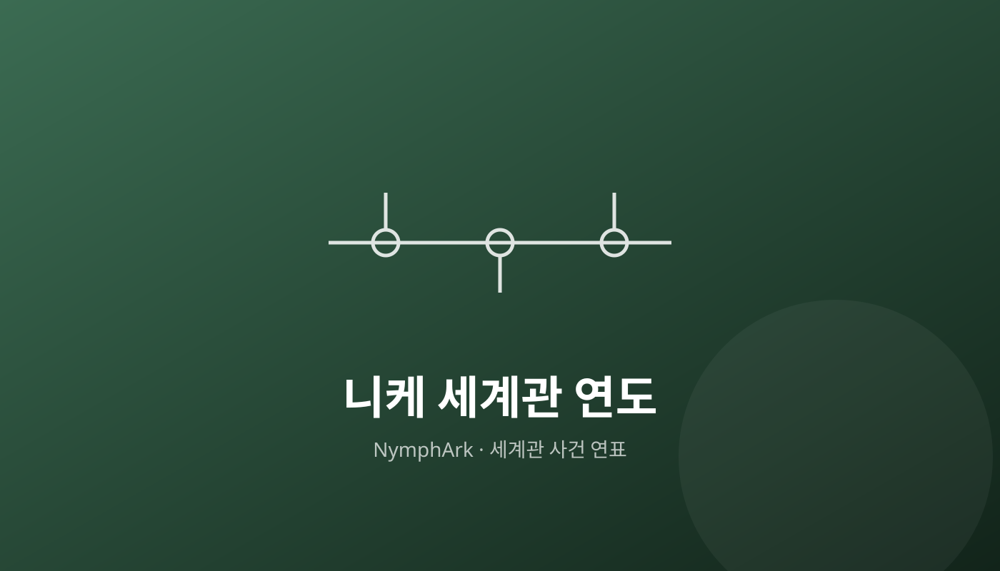

'승리의 여신: 니케' 정보를 나만의 방식으로 정리합니다 분류 세 가지 분류로 정보를 올립니다 고유 용어 해석 니케 세계에 등장하는 고유 용어들을 하나씩 골라 뜻과 맥락을 풀이합니다. 목록 보기 → 니케 도감 니케(캐릭터)들의 정보를 도감 형식으로 한 명씩 정리합니다. 목록 보기 →  니케 세계관 연도 세계관에서 벌어진 사건들을 연도 순서로 정리합니다. 목록 보기 → 다른 사이트도 운영 중입니다 차승준의 깃허브 블로그 대문에서 운영 중인 사이트를 모두 볼 수 있습니다. 메인 블로그 가기